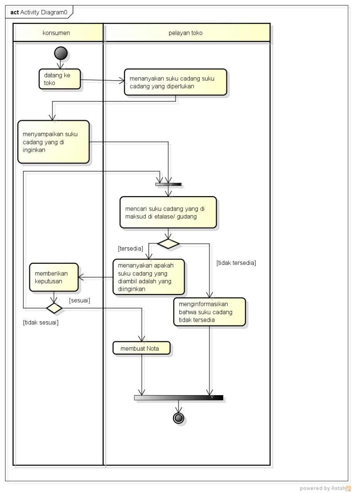

Berisi saluran mata kuliah analisa dan perancangan PL
1811500098 putri hertianti ti6a
Hasil saya menyadur pertemuan 2:
1)Penjelasan perhitungan nilai absen
2)Penjelasan perhitungan nilai tugas
3)Penjelasan bagaimana cara menyadur lewat github
4)Penjelasan dan pemberian materi tentang isi pertemuan kedua
5)Penjelasan activity diagram dari sebuah pejualan motor di makalah yang ada di perpustakaan
6)Menginstall aplikasi astah
7)Penjelasan bagaimana cara menggunakan aplikasi astah
8)Membuat activity diagram menggunakan aplikasi astah
9)Penjelasan tentang activity diagram
10)Hasil activity diagram dikirim ke saduran di github
11)Penjelasan bagaimana copy activity diagram jika mau digunakan untuk KP
12)Penjelasan mengubah activity diagram menjadi bentuk gambar
Hasil file project astah download
